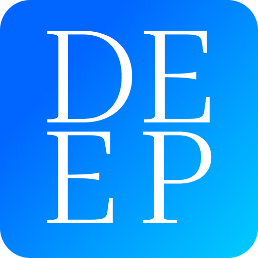

My repositories

Fire-Grasp
Fire-Grasp is an application designed to detect fires in real-time. It uses screenshots from your computer and image processing algorithms to determine the presence of fire.
Open on GitHubNeTube
NeTube - это упрощенная платформа для обмена видео, созданная с использованием фреймворка Flask (Python). Она позволяет пользователям загружать, просматривать и оценивать видеоролики.
Open on GitHub

DEEP
DEEP is a mobile application designed for employees of the Ministry of Emergency Situations (EMERCOM), divers, sappers, and other specialists who work directly with life-threatening situations or objects. The application provides tools and resources to enhance the safety and efficiency of their work in extreme conditions.
Open on GitHub